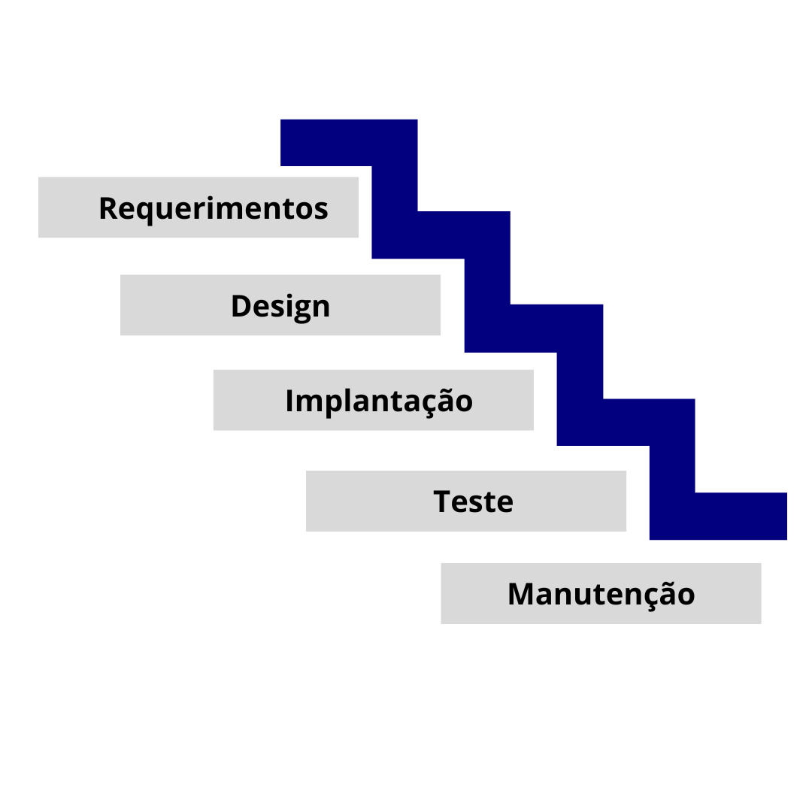
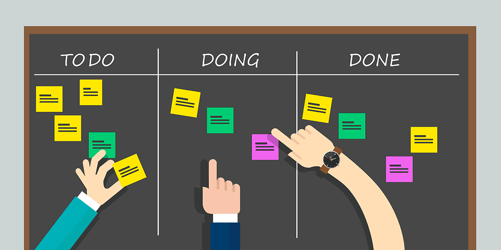
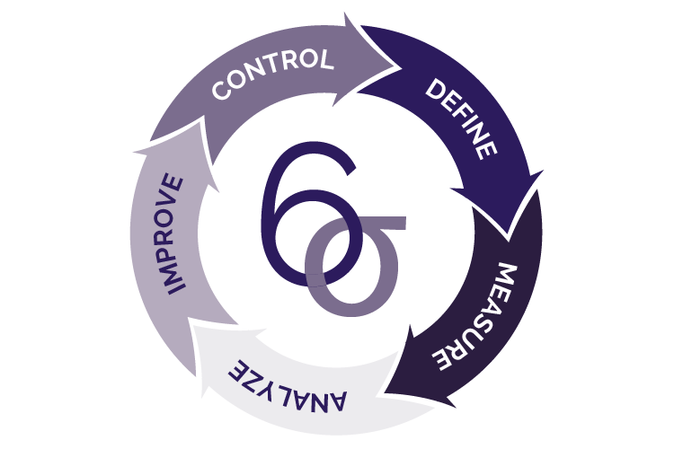
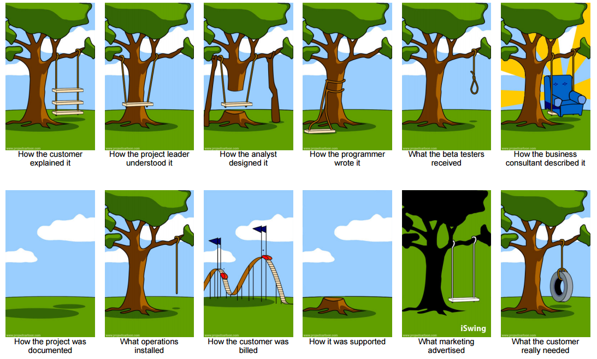

A Project Management Journey

Quem sou eu?
import resume
nome = "joao carlos ariedi filho"
estudo = ["física", "engenharia de produção"]
profissão = ["principal software engineer", "consultor"]
empresas = ["metabaseQ", "scaffold", "kodus"]
hobbies = ["jogos", "violão", "automação", "academia"]
objetivos = ["fablab", "estúdio de jogos"]
contato = {
"linkedin": "joaoariedi",
"github": "joaoariedi"
}
Disclaimer
Falo rapido
Pergunte sempre

Projeto
Passos para gerar algo novo
Profundamente associado a tempo e recursos

Gestão
O que não se mede não se gerencia.
Princípio Ágil
- Colaboração
- Rapidez
- Iteratividade
- Dados
- Individualidade
- Processos
Metodologia
“Caminho ou via para realização de algo.”
Cascata
Encadeamento de atividades dependentes
Scrum
Dividir pra conquistar
Sprints, Pontos, Cerimônias, Papéis
Kanban
Controle visual
Scrumban
O melhor dos dois mundos

Six Sigma
Definir, Medir, Analisar, Melhorar, Controlar
Demais métodos
- PRINCE2: PRojects IN Controlled Environments
- CPM: Método do caminho crítico
- CCPM: Gestão de projetos em cadeias críticas
- Lean: Desperdício, Inconsistência, Sobrecarga
- PMBOK®: Project Management Institute
- XP: Programação extrema
Qual metodologia escolher?
- Contexto
- Foco
- Complexidade
- Especialização
- Escala
Principios gerais
- Assertividade: Clareza na comunicação e demanda
- Previsibilidade: Prazos realistas
- Adequação: Melhoria constante
- Documentação: Principalmente das decisões
- Validação: Mínimo viável a ser entregue a cada ciclo
Tentamos evitar
O Scrum com Kanban
Os papéis
- Gerente de projeto: Organiza as cerimônias e entregas
- Dono do produto: Detem a visão do cliente
- Lider técnico: Descreve o que tem que ser feito e aprova tecnicamente
- Especialistas: Recebem demandas direcionadas
- Executores: Tornam a visão real
As demandas
- Relatos do usuário: Desejo do cliente
- Épicos: Conjuntos de relatos que são entregas homéricas
- Tarefas: Descrição técnica do que tem que ser feito para entregar o relato
- Sub-tarefas: Como o executor se organiza
- Spikes: Tarefas que visam responder perguntas ou coletar dados
Os estágios
- Backlog: Tudo que se planeja fazer sabe-se lá quando
- To do: O que vai ser feito nesse ciclo
- Doing: Está sendo feito
- Blocked: Travou por algum motivo
- Approval: Precisa de aprovação
- Done: Feito com sucesso
As prioridades
- Desejável: Se der tempo faz
- Incluso: Privisto que tenha
- Crítico: Tem que ser feito primeiro
Os padrões de demanda
- Descrição: O que tem que ser feito
- Critérios de aceitação: Dado x, então y.
- Definição de pronto: Checklist indispensável
As cerimônias
- Refinamento: Tudo que vai pra planejamento foi entendido?
- Planejamento: O que pode ser feito no proximo ciclo
- Diária 15min: O que fiz, que problema tenho e o que vou fazer
- Revisão: O que deu certo, o que deu errado e o que precisa de melhora
- Retrospectiva: Melhora do processo
A dinâmica
- Cliente: Quem vai descrever o applicativo
- Relatos do usuário: Como o cliente descreve a experiência
- Definição do MVP: Qual o mínimo necessário pro cliente
- Refinamento: O que terá que ser feito
- Planejamento: O que deveria ser feito no primeiro ciclo
- Revisão: Quais foram os problemas
Dúvidas? Anseios? Perplexidades? Sonhos?